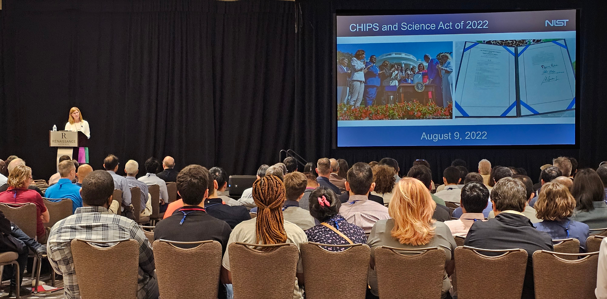
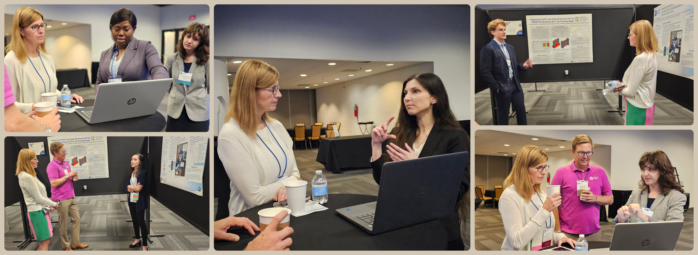

History.
SRC TECHCON 2023, held September 10-12, 2023 in Austin, Texas, was a resounding success! This year we celebrated our 25th TECHCON event by bringing together industry and academia to exchange ideas, build real-world relationships, and to secure industry jobs for our graduating SRC Research Scholars. The fun started with a party Sunday night that focused on the Scholars. Over 180 SRC-funded Research Scholars, selected from nearly 500 applicants, were invited to a dinner and an open bar with a DJ and yard games like jumbo Jenga and cornhole, ending with a sweet ice cream treat. The student population is quite diverse: 50% of the students are women or under-represented minorities, and the student presenters include undergrads, graduate students, and postdoctoral researchers.


